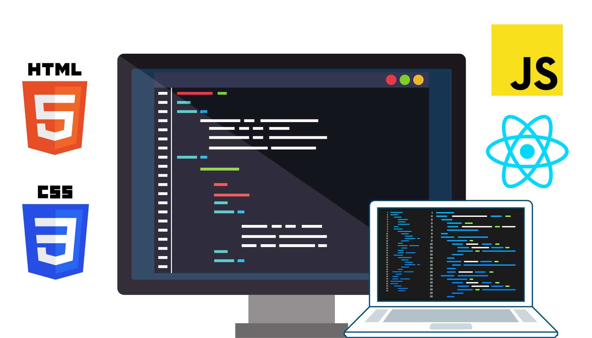

Hola! Soy José Juan Cortina
Desarrollo de paginas web

Me gusta dar el 100% de mis capacidades y afrontar los retos de frente, sé que trabajar en equipo es la clave del éxito por lo que trato de estar bien con mi equipo para que todos podamos mejorar juntos.
Soy un estudiante del 8º tetramestre de la Universidad Ciudadana de Nuevo León, al ser en línea me ha permitido tomar cursos extras para continuar preparándome ya que considero uno debe prepararse al máximo para poder afrontar los desafíos actuales y por venir, además de que trabajo actualmente en el área de Cumplimiento Legal de la compañía Dolex.
Desarrollo web
Gracias al estudio en la UCNL y Codellege, he podido participar en proyectos personales que me han permitido aprender distintas tecnologías para el desarrollo web.
Estudios universitarios
Curso el 8º tetramestre de la UCNL en la carrera de Licenciatura en Informática Administrativa, lo que me ha permitido conocer diversos tópicos generales como matemáticas, economía, finanzas, administración, recursos humanos, sistemas operativos, bases de datos, redes de computadora, desarrollo web en general, etc.
Personal
En lo personal, busco mejorar mis conocimientos y habilidades para poder ofrecer una mejor experiencia y mayor calidad en mis proyectos, esto con la finalidad de obtener un trabajo acorde a los conocimientos adquiridos a lo largo de mi carrera y experiencia, es por esto que pude integrarme al equipo de Codellege (proyecto de Softtek) en el curso de UP, en el cual aprendí y trabaje con distintas tecnologías y un curso de inglés que me ha capacitado para entender el lenguaje.